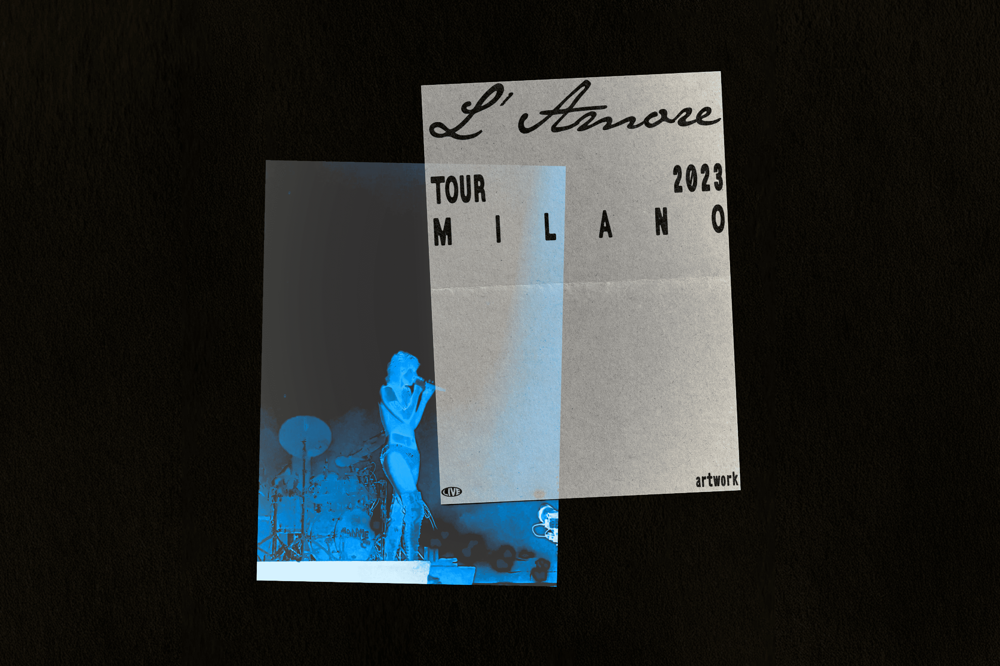
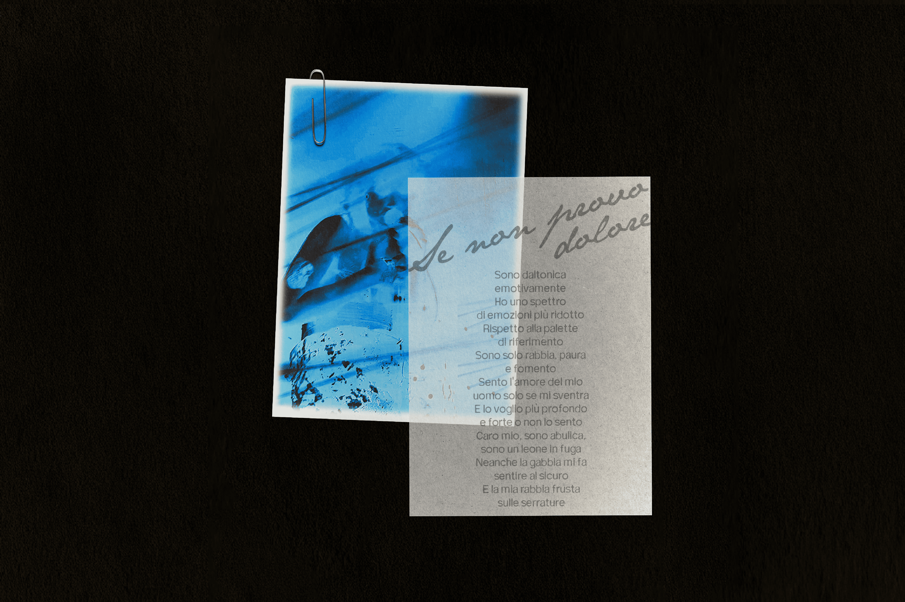
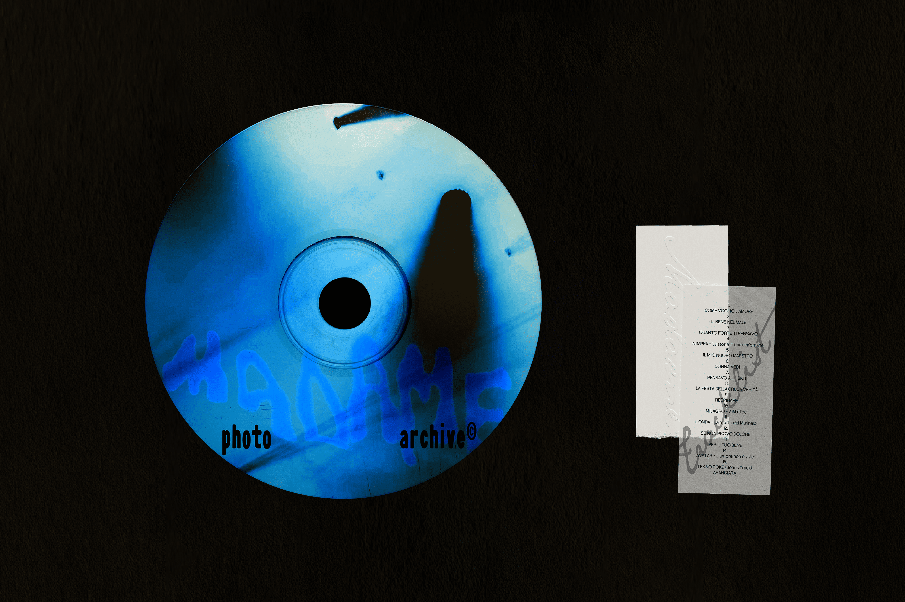

/ GRAPHIC DESIGN
/ PERSONAL PROJECT
/ 2025
Personal artwork inspired by Madame’s L’Amore Tour.
The project originates from photographs I took during the concert, later manipulated through a visual language inspired by the cyanotype technique.
The series is conceived as a photo archive where each image is paired with a printed card featuring a song and an excerpt from its lyrics. Structured like a music album, the sequence creates a correspondence between photographs and tracks, transforming the archive into a visual interpretation of the concert’s atmosphere and narrative.


